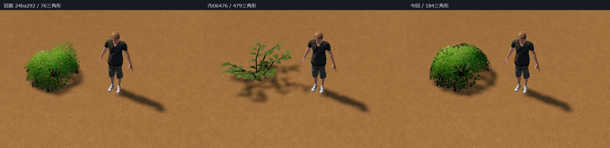
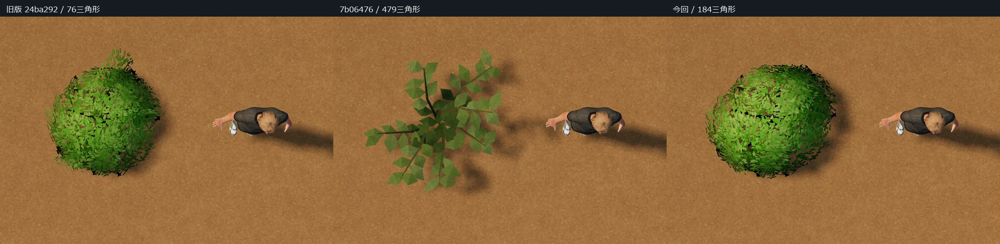
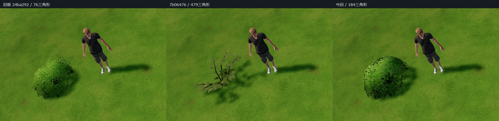
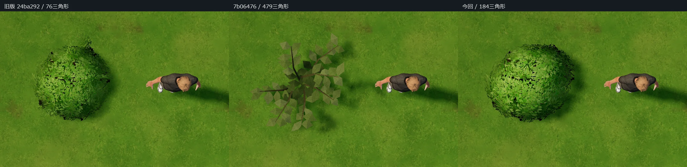

左：旧版24ba292 ／ 中：7b06476 ／ 右：今回。同じ人物・縮尺・配置・カメラ・光・地面で比較しています。画像を押すと拡大できます。
旧版の5本の木質枝と葉クラスター配置を継承し、葉面を分割して曲げました。184三角形・1材質、画像追加なし。保存ID・寸法、土判定と樹木の改善、風と接触を維持しています。




接写では葉面の繰り返しが残ります。切り抜きと影の負荷は戻るため、ポリゴン削減だけで高速化を保証しません。スマホ実機の性能とゲーム本体統合は未検証です。